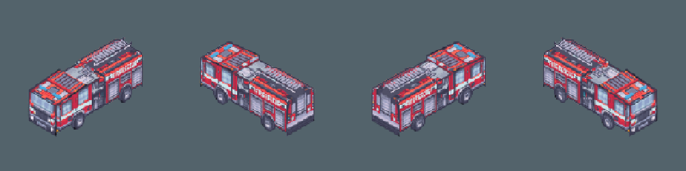
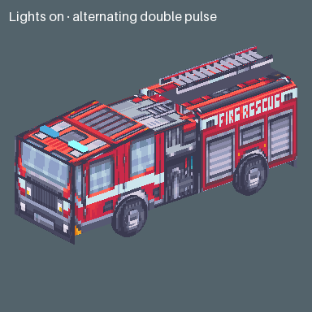
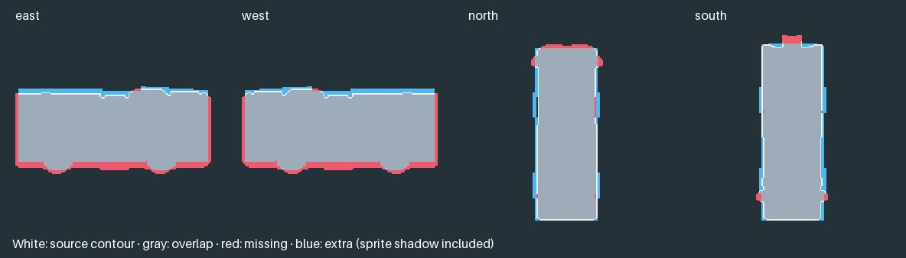

Original sprites above, matched Blender renders below.

Wheels and arch openings now share source-fitted axles; floor openings clear the tires. The ladder has its own hinge. Its raised pose and clearance still need review. Roof paint is owned by the rear source; front roof panel placement remains approximate.


Download the model · Other vehicle reviews · Tilefun Workshop
Sprite source: Modern Exteriors by LimeZu. Authored diagnostic awaiting review; game integration and production art approval are pending.